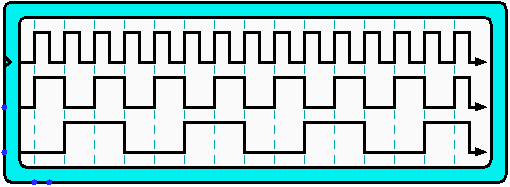

Digital Oscilloscope
Digital Oscilloscope
| Library: |
Input/Output |
| Introduced: |
2.8.0.0 (Fork) |
| Appearance: |
 |
Behavior
This component draws the diagram of each connected input if enable is different from 0,
the diagram will be updated for each clock edge.
To avoid a problem with delays (in each output pin), it will save
the last values from the previous tick to the last one
Pins
- West edge, upper pin marked by triangle (input, bit width 1)
- Clock - when triggered while the write-enable pin isn't 0, the
diagram will be updated.
- West edge, variable number (inputs, bit width 1)
- The values of these inputs will be shown into the diagram
- South edge, leftmost pin (input, bit width 1)
- Enable - when 0, diables the component
- South edge, second pin from left (input, bit width 1)
- Clear - when 1, the diagram is cleared of all data, and all other inputs
are ignored.
Attributes
- Number Of Inputs
- The number of inputs to draw into the diagram
- Number Of States
- The maximum number of states drawn into the diagram for each input
- Clock Edge Lines
- Choose on whic clock's edge draw a vertical dashed line
- Border Color
- The color with which to draw the text appearing in the terminal.
- Label
- The text within the label associated with the component.
- Label Location
- The location of the label relative to the component.
- Label Font
- The font with which to render the label.
- Label Color
- The color with which to draw the label.
Poke Tool Behavior
None.
Text Tool Behavior
Allows the label associated with the component to be edited.
Back to Library Reference